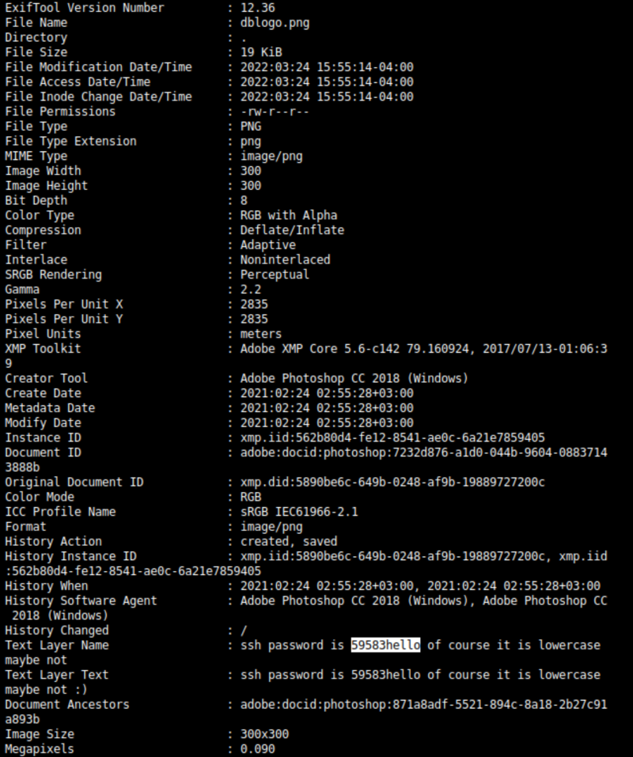

3.4 Data exfiltration with exiftool
exiftool is a platform independent command line and GUI application for reading, writing and editing meta information of images and media files. Metadata information can be GPS coordinates, tags, creation time, edit time, device name etc.1. Download the “dblogo.png” file to your Kali Machine. Right-click on the image and select “Save Image as”.
2. On your Kali Machine, show the image information with “exiftool”.
$exiftool dblogo.png
Output:

You can see a SSH password
59583hello.